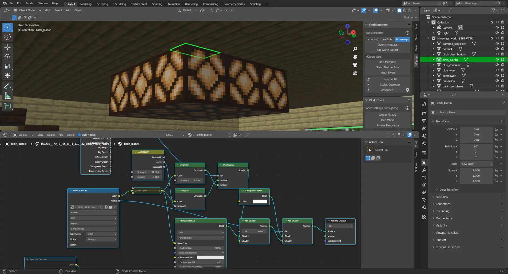
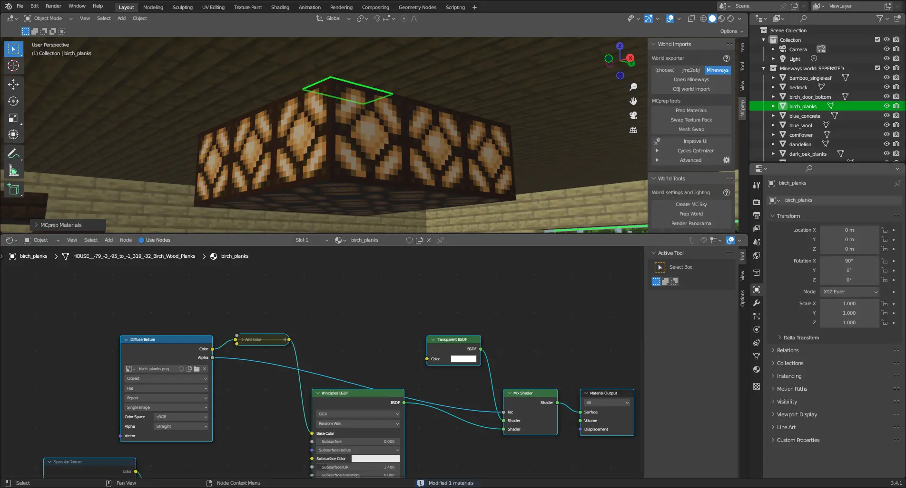
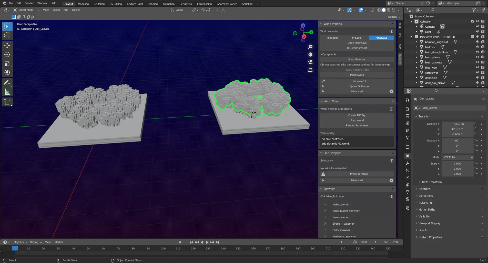
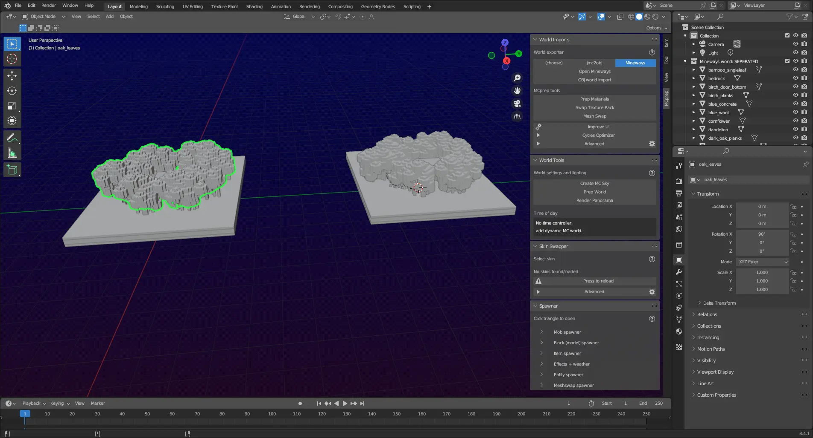
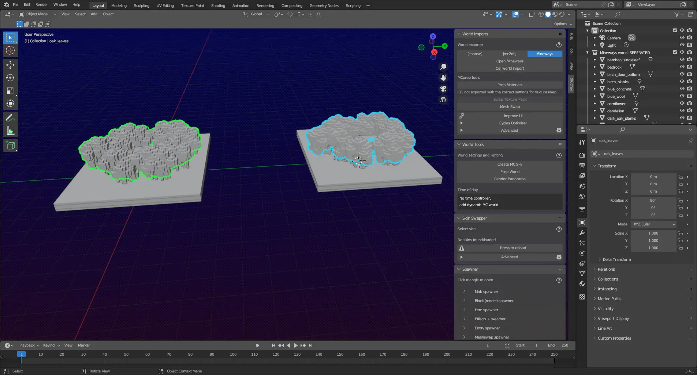

MCprep Progress
UPDATE: As of March 11th, 2023, most of these are now confirmed for the 3.4.2 release
As some of you know, I’m an MCprep developer, and as part of what I do I work on adding features and fixing bugs in MCprep. Not that, I also help review pull requests and fix bugs.
The latest version of MCprep, MCprep v3.4.1 was released in August of last year. While it may seem like MCprep development is dying, that couldn’t be further from the truth.
Here’s some of the features that are in the works right now.
Prep Materials without Emissive Nodes #
This may seem like something useless, but this feature was originally planned as a Cycles Optimizer improvement in 3.4.2 (before I left MCprep development for a bit of time) but has since been moved to the core of prep materials.
This means for users that don’t need emissive nodes (like EEVEE users), they get a much easier node setup to work with (especially when using SEUS or Specular). Here’s a comparison:  
Wow, so much better.
But why was this feature originally going to be a Cycles optimizer feature? It’s because in Cycles, mesh lights (like what MCprep generates) causes a lot more noise then normal lamps; by removing mesh lights we can reduce the amount of noise, which is a form of optimization.
It was decided in the middle of development however that it would be better to do it directly in prep materials rather then in the Cycles Optimizer, hence the move.
Currently it’s a WIP, and you can follow its development on Github
3.4 Mix Node Support #
Blender 3.4 changed from MixRGB to a new general Mix node. While it does convert MixRGB nodes already, we can’t rely on this. As such, zNightLord made a pull request near the end of last year that implements support for the new Mix node, which was merged in January of this year.
Cool, just one slight issue: an indexing problem that prevented prep materials from working in certain conditions. Originally thought to occur in edge cases, it was found in MCprep Kaion that the issue extended further into texture swap and what not.
This doesn’t impact any release version of MCprep but regardless it needed to be fixed. A new pull request fixes this issue, and should be merged in the next couple of days.
Even with the bug it’s still an exciting feature for Blender compatibility, and who knows what we could do with the new Mix node.
Using the New C++ OBJ Importer #
Be prepared for massive performance improvements when importing OBJs in Blender 3.5 and above in the next version of MCprep, there’s work being done on using the new C++ OBJ importer shipped with Blender 3.1 and above.
But wait, why will this change only apply to Blender 3.5 and above? Well, until Blender 3.5, the C++ OBJ importer was missing certain features that MCprep used when importing OBJs, specifically importing split groups. It was debated on if the C++ OBJ importer should also be used between 3.1 and 3.4, but ultimately we settled on 3.5 and above only for feature parity. We don’t want to deal with angry users afterall.
You can follow development on Github
Proper ACES Support #
The same pull request that adds the use of the C++ importer also adds proper ACES support for importing OBJs.
“But wait, didn’t MCprep add ACES support a while back?”
For prep materials it did, but not for OBJs. This has been a bug reported as far back as 2020, and was thought an issue with Blender itself.
While that is true, it goes back to the MTL file generated by Minecraft world exporters. On another Github repo, it was mentioned that certain parts of the MTL could be commented out to prevent errors when importing, so we tested that, and indeed it fixed the issue.
So now MCprep will edit MTL files when importing an OBJ (if anything other then Standard or Filmic is used).
“But wait, that sounds bad”
Yeah, that change is still the subject of debate. What will likely happen is that MCprep will back up the MTL somewhere (maybe in a new folder) before editing, or something like that. Either way, it’s still an exciting feature, and will fix a 3 year old bug in MCprep.
Checking Feature Compatability with OBJs #
This is a big one, MCprep will now check an OBJ’s header (if exported with Mineways) to determine if texture swap and animate textures can be used without issues.
Here’s some screenshots of how this looks. If you notice in the MCprep panel, as long as the right OBJ is selected, texture swap can’t be used (because it was exported with incorrect settings).   
This is a massive improvement as it prevents one of the most common issues we see, although it only apples to Mineways OBJs, due to them exporting a header (although we are looking into a standard header format world exporter developers can use). Still better then nothing.
You can follow along here on Github
How can I test these new features? #
Sadly MCprep doesn’t provide pre-release builds, so you have 2 options:
- Compile MCprep from the
devbranch - Use MCprep Kaion (shameless self promo)
The former is a bit complicated for newcomers, so let’s look at the latter.
MCprep Kaion is a fork of MCprep specifically designed to help accelerate MCprep’s development. As you might notice, most of these new features actually come from MCprep Kaion. One of Kaion’s goals is to provide new features early to users easily. MCprep Kaion has all the features you’d expect from MCprep, and much more, but there is a cost.
MCprep Kaion is not as well tested as MCprep itself, and often times issues will prop up. Many times it’ll recieve multiple updates a week or even in a day, so it’s not for those expecting something stable. Still, it aims to provide users with a good user experience, and is a good way of previewing new features.
It’s also good if you want to test and catch bugs with new features, which helps massively.
Concluding Remarks #
While MCprep’s development may seem to be going at a slow pace, it’s by no means dead. New features are coming, and that’s just the beginning.